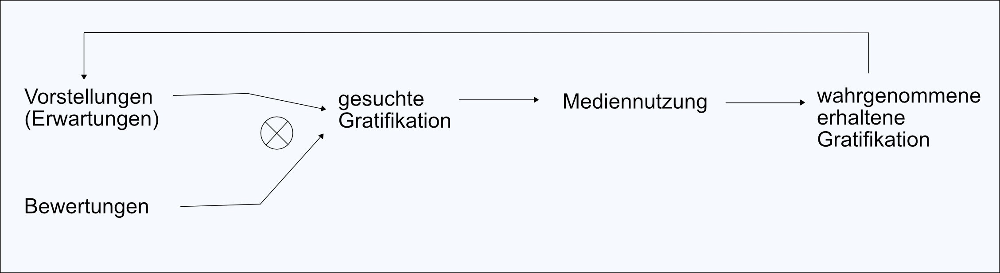

Diskrepanzmodelle
GS/GO Diskrepanzmodelle
GS steht hier für gratification sought (gesuchte Gratifikation) und GO für gratifictaions obtained (erhaltene Gratifikation). Diese Unterscheidung stammt von Greenberg. Er wollte die Diskrepanz dieser beiden Werte messen. Es wird dabei angenommen, dass die Rezipienten die Medien bevorzugen, die ihre Erwartungen (also GS) erfüllen. Die Unterscheidung von GS und GO wird seither standardmäßig in den meisten U&G-Studien vorgenommen. In Studien sieht das dann so aus, dass Teilnehmer in einer standardisierten Befragung anhand einer Gratifikationsliste angeben sollen, wie wichtig verschiedenen Gratifikationen bei der Mediennutzung für sie sind. Anschließend sollen sie angeben, wie stark diese Bedürfnisse befriedigt werden. So ergibt sich eine GS-GO-Diskrepanz für jede Gratifikation, die zeigt, wie gut sich das untersuchte Medium zur Bedürfnisbefriedigung des Befragten eignet. Ermittelt man den Durchschnitt der Diskrepanzen, kann man die generelle Erwartungskonformität eines Mediums erhalten. Kritisiert wird an diesen GS-GO-Studien, dass die jeweiligen Fragen zur Erwartung und zur Befriedigung inhaltlich zu stark voneinander abweichen. So kann die Befriedigung der Erwartung des Rezipienten des Mediums Fernseher vom Inhalt, also der Fernsehsendung, beeinflusst werden.
Erwartungs-Bewertungs-Ansatz
Galloway & Meek und van Leuven entwickelten unabhängig voneinander den Erwartungs-Bewertungs-Ansatz. Bekannt wurde dieser dann in der Form von Palmgreen & Rayburn. Dieser Ansatz basiert auf der Expectancy-Value-Theorie. Diese geht davon aus, dass sich Einstellungen gegenüber Objekten, Ereignissen und Verhalten durch zwei Dimensionen darstellen lassen: der Erwartung, dass bestimmte Folgen eintreten, und die persönliche Bewertung dieser Folgen. Durch diese Bewertung, der zu erwarten eintretenden Folgen, entsteht eine entsprechende Einstellung zum Objekt, Ereignis oder Verhalten. Die Einstellung beeinflusst wiederum die Wahrscheinlichkeit, dass Menschen ein entsprechendes Verhalten anwenden. Der Erwartungs-Bewertungs-Ansatz besteht folglich darin, dass Rezipienten eine Erwartung gegenüber einem Medium haben, diese Erwartungen können sie von sehr gut zu sehr schlecht bewerten. Die Nutzungswahrscheinlichkeit eines Mediums wird zusätzlich vom GS-Wert bestimmt. Es wird von mehreren Wirkungsstufen ausgegangen: Erwartung x Bewertung → GS → Nutzung Dies lässt sich als Formel so darstellen: bi x ei = GSi = Nutzung (b beliefs; e evaluation) Der Ansatz schließt somit auch die früheren Erfahrungen eines Rezipienten mit dem untersuchten Medium ein.
Erwartungs-Bewertungs-Modell
Palmgreen erweiterte den Erwartungs-Bewertungs-Ansatz zum Erwartungs-Bewertungs-Modell. Dieses sagt aus, dass bei der Nutzung eines Mediums Gratifikationen wahrgenommen werden (GO), diese sind Nutzererfahrungen. Diese Nutzererfahrungen mehren sich mit der Zeit in einem Lernprozess und verdichten sich zu einem allgemeinen Medienwissen. Somit unterscheidet dieses Modell zwischen einzelnen Nutzungsphasen, ihrer Bewertung und der allgemeinen Vorstellung gegenüber dem zu untersuchenden Medium.
Quelle: Palmgreen (1984: 56)
Rosengrens Paradigma für U&G-Forschung
Das Paradigma von Rosengrens berücksichtigt die Grundbedürfnisse einer Person, ihre Persönlichkeit, und gesellschaftliche Faktoren, die ein Individuum beeinflussen, Defizite und passende Lösungsmöglichkeit wahrzunehmen. Erwartungen und Bewertungen führen nach diesem Modell zur Suche nach bestimmten Gratifikationen (GS). Persönliche und gesellschaftliche Faktoren beeinflussen nach diesem Modell den gesamten Prozess der Mediennutzung bis hin zur Bedürfnisbefriedigung. Schwierig ist die Umsetzung dieses Modells in Studien, da die Persönlichkeits- und Gesellschaftsfaktoren schwer zu greifen sind.
Quelle: Palmgreen (1974: 271)
Modell von McLeod & Becker
McLeod & Becker veröffentlichten ein weiteres Modell. Nach diesem Modell sucht der Rezipient
bestimmte Gratifiktionen (Motive), diese können unterschiedliche Ursprünge haben. Der Rezipient
entscheidet sich unter der Berücksichtigung seiner aktuellen Motive und der aktuell verfügbaren
Verhaltensvarianten für ein bestimmtes Verhalten (Behavior), das ihm als bestes Mittel zur
Bedürfnisbefriedigung erscheint (Assessment of Means of Satisfication).

{kind=link}